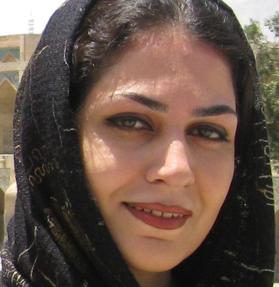

|
|
|
Browsing
Contact Us |
Campaigners |
Face to Face |
Tribune |
Interview |
News |
On the Web |
One Million |
Report
Farsi | Français | German | Italian | Spanish | العربية Also in this section
|
 Bahareh Hedayat From the Perspective of her Friends in the Women’s Commission of the Office to Foster UnityFriday 5 November 2010 Translated by: Sussan Tahmasebi Change for Equality: Bahareh Hedayat served as the first secretary of the Women’s Commission of the Student Organization Office to Foster Unity (Tahkime Vahdat Student Organization). She served in this position between 2005 and 2007, and afterwards she was the only woman to be elected to and to serve on the Central Council of the Office to Foster Unity. In this role she continued to support the Women’s Commission. Bahareh Hedayat is currently serving a 9.5 year sentence in Evin prison in relation to her student rights and women’s rights activities. What follows is a tribute to her by her colleagues in the Women’s Commission: Niloofar Golkar: I review the sentences handed out over the past year. I examine the prison sentences issued in the court cases brought against student activists, women’s rights activists, reformists and political activists. A sentence of nine and half years is rare indeed. There is more than anger which is felt by this sentence. In fact, it offers cause for pause. Why is it that Bahareh has been sentenced so harshly? I search my memories, to recall Tehran University. It was 2006 or perhaps 2007, I can never quite keep the dates straight, but events and the faces of each and every friend and individual I remember with vivid clarity. I remember that we had gathered to activated the Women’s Commission within the student organization Office to Foster Unity (Daftar-e Tahkim-e Vahdat), which had been set up in 2005. One of my friends suggested that I should go and offer my assistance. I wasn’t a member of any student organization, nor was I a member of Tahkim, but I thought that perhaps this could be a positive step in addressing women’s issues within the student movement, which had recreated for the most part the patriarchal structures prevalent in our society within the university setting. Though there were indeed infrequent efforts to break this trend. I saw Bahareh there for the first time. Along with a number of other female students, we managed to get the Women’s Commission active and the Commission got off to a speedy start. Along with the student and political issues addressed within the university, given the activities of women’s rights activists within the One Million Signatures Campaign outside the University, the issues facing women in our society were addressed in a more significant manner within the University as well. Soon, there wasn’t a publication, a protest or even a discussion within the university that didn’t address in part women’s issues. The more I think about it, the more convinced I become, that a government which in recent years has exhibited the greatest enmity against women has indeed imprisoned Bahareh based on very simple and clear reasoning. After all, this is the same government that has implemented legislation designed to reduce women’s work hours, imposed gender quotas designed to reduce the admittance of female students into university, has implemented the social safety program leading to the arrest of thousands of women for their lack of observance of appropriate veiling regulations, proposed the family protection bill aptly renamed as the anti-family bill, and has implemented or proposed tens of other anti woman legislation, but still seeks to conceal its enmity with women under the guise of entrance of women into government and the parliament—many of these women using their governmental or parliamentary platforms to speak and advocated against women’s rights. So examining this record, it becomes even more apparent to me that fear is indeed the reason for this very heavy, unjust and shameful sentence issued against Bahareh. An extreme fear against women who defend women’s rights, which is harbored by a patriarchal government, trapped within its own rotting structure. We object to this sentence and will not stop voicing those objections until Bahareh is freed from prison. Reyhaneh Haghighi: She was there. She was everywhere. It was as if she was condemned to fight for freedom. It was as if we were all condemned to give our lives for freedom. She had to hide all her feelings behind a mask, so that she could continue with her fight. But she was a woman, with all her femininity, with all her suppleness, with all her emotions. She was Bahar (the Spring). She was Bahareh. Bahareh Hedayat. Her clenched fists, her steadfast belief and her unwavering steps, were testaments to new growth in the cold winter of our days. After all she was the Spring. She was Bahareh Hedayat. She fought without any claim. I remember her determined gaze, the strength of her words, her being there, her being everywhere, at every moment, at every second. She told us to write. “You have a pen, then you should write about the harassment of the female student at Zanjan University. Write about the anti family bill. Write of the cold and difficult days of our land.” She wanted Spring. She was the Spring, after all. Bahareh Hedayat. Now I don’t know how long it has been. It hasn’t been quite a year. I don’t want to know how long it’s been since Spring has been taken from Amin’s home. She is condemned to nine years of not being present in her own life and of remaining behind the cold and hard bars of prison….I know wherever she is, that is where the Spring is, as Bahareh herself was the source of growth and Spring, whether behind bars or not. She was Spring and she still is. She is Bahareh Hedayat… Sahar RezaZadeh: Is it by chance that I sit here, in Daneshjoo (student) Park, with my gaze on the other side of the fountain? Just as I begin to write for you, there you are standing with all your ever present poise. Milad is with you. Was it winter or was it Fall? I can’t remember now. I remember that Nasim was shivering from the cold. My daydreams slip away and tears fill my eyes. These tears are for you, for all of those who are now imprisoned. My dear Bahareh, I want to gather all this feeling in one place and express it in a few sentences. But I am not able to do so. I only wish that things were not as they are. I wish that things would change and that you could be here with me, now. Not a day goes by when I don’t think of you and I don’t await your freedom. But it is again you, Bahareh, coming to our rescue, comforting us and encouraging us. I believe in you. And as usual, the words do not come to my rescue and I am unable to express how deeply I miss you, how sad I truly am and how ashamed I feel in this place, where I cannot even protest your loneliness. My dear Bahareh, I wish we could go back in time to two years ago, and I promise that this time I will listen to you…If only….. Zeinab Peyghambarzadeh: November 25, 2005, the statement marking the inauguration of the Women’s Commission in the Office to Foster Unity, spoke of a change that quickly engulfed the universities across the country. Less than a year later, I joined this effort for change. I went to see Bahareh, with a complaint. “Why had the Women’s Commission not criticized the increasing number of female students being suspended from university?” Bahareh in return, invited me and my friends to join her in the effort that she had started. This was a lesson for many young women in cities close and far that we have learned from her: to fight for their rights and pay the price of that struggle. During these years, we have experienced many sweet and bitter days. We spoke to many women’s rights activists about our concerns and worked steadfastly to ensure that university students were sensitized with respect to women’s issues. The result was encouraging indeed. Many women’s organizations were established in various universities. Numerous programs objecting the violation of women’s rights were organized in the university setting. Student publications and websites began addressing women’s issues. The presence of female students in the formal structures of the university including student organizations and Tahkim became more noticeable. But for us the excitement and happiness of that experience had a heavy price, weighing heaviest on Bahareh. She spent much of her time over these years going back and forth from the courts to prison. But she was more determined than to cower under the pressures imposed upon her. Like Spring, which follows the cold of winter, she would arrive fresh and every time she was filled with excitement and hope. Upon her return from prison, she would encourage us to continue along our path. But this time, it seems that our winter will be long. Come back Bahareh, so that the blossom of hope can take root in our unhappy hearts. Nasim Sarabandi: Turning the pages of the past, I find many memories with your presence. I find memories of us being together. I find memories of your small and quiet home which was located in the furthest corner of Tehran Pars and at times in order to reach your home from Karaj it seemed that I had to travel for hours. Now that home is empty of your presence, Bahareh. Ten months have passed after the storm that forced you to leave your home. Now your home has changed to the prison which holds you. The corners of this prison, you have come to know well. Every so often I think of that determining point—the point that could have switched our destinies. It was august 2008, which enters my thought. You were sitting in the metro station—a busy station, which reminds one of the fast pace of life and the times gone by. When I got off the train, we shook hands and I noticed your wedding band—a ring that had recently been placed on your finger. I hated having to utter the words. I hated telling you that you had to run for the elections of the Central Council of the Office to Foster Unity (Tahkim-e Vahdat). After three years, you were now saying that like other women, you wanted to discover life and were looking for happiness. We sat on the blue benches of the Metro station at Hassan Abad. You insisted that the Tahkim elections needed new contenders and Tahkim needed new blood. You insisted that I should run in the upcoming elections. I complained of all those friends who had made the course a difficult one for me. I explained that you were most suited to handle the difficult days we all sensed were ahead of us. You were the best and most deserving. Around us, people would rush onto the Metro platform, and bump into one another, so they could get to trains which had not yet arrived. You sat there peacefully, watching the hurried trains pull out of the station. At parting, we both wished the other luck in the next elections of Tahkim, which was to be held in two day’s time. Two years have passed since that day. I have thought about that determining moment thousands of times and am regretful. Only if I had not insisted that you stand for elections. I only wish…Then I think, well what if your days and nights are not spent in the home like other women. So what if your spirit has not succumbed to the dailyness of life. What we gain from this life, which passes us in hurry, never taking the opportunity to hold still, is nothing. But you, Bahareh, you have lived fully embracing all of your humanity. You have lived with humanity… Note: Student and women’s rights activist Bahareh Hedayat’s nine and half year prison sentence was been upheld in appeal. The decision of the appeals court was submitted to her lawyer on Saturday July 24, 2010. According to news reports Bahareh Hedayat faced a variety of charges after her arrest, including spreading of propaganda against the state through interviews with foreign media, insulting the Leader of IRI, insulting the President of the IRI, disruption of public order through participation in illegal protests, illegal entry into and vandalism of Amir Kabir University during a visit by Mehdi Karoubi and illegal gathering and collusion against the state. The 28th branch of the Revolutionary Courts had issued a sentence of nine and half years in the initial court hearing. Hedayat was given 6 months for insulting the president, 2 years for insulting the Leader and 5 years for anti-state and anti-national security actions. The sentence was upheld in the 54th branch of the Tehran appeals court, without consideration of new investigations. It should be noted that Bahareh Hedayat had been sentenced to a two year suspended prison term for her participation in the protest for women’s rights in Haft-e Tir square in June 2006. The two year suspended sentence has been added to her 7 and half year sentence, making her mandatory prison time 9 and half years. Bahareh Hedayat is a well known women’s rights activist, student leader and member of the Central Council of the Student Organization Office to Foster Unity. She was arrested in the midst of the unrest following the disputed presidential elections, on December 31, 2009 and has remained in prison since. It should also be noted that Milad Asadi, another leading student activist and member of the Student Organization Office to Foster Unity was sentenced to a 7 year prison term. This sentence has also been upheld in appeals court. Milad Asadi was arrested on November 30, 2009. |